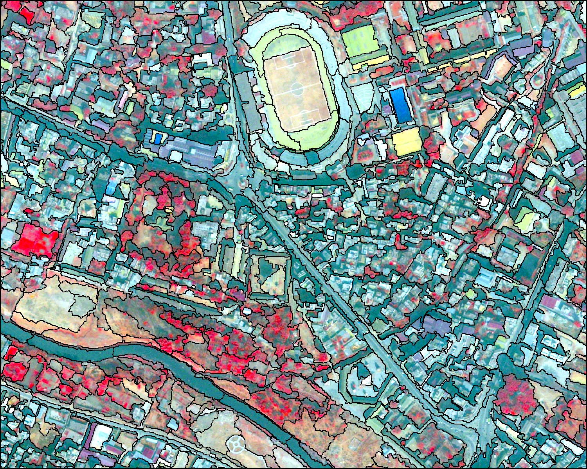
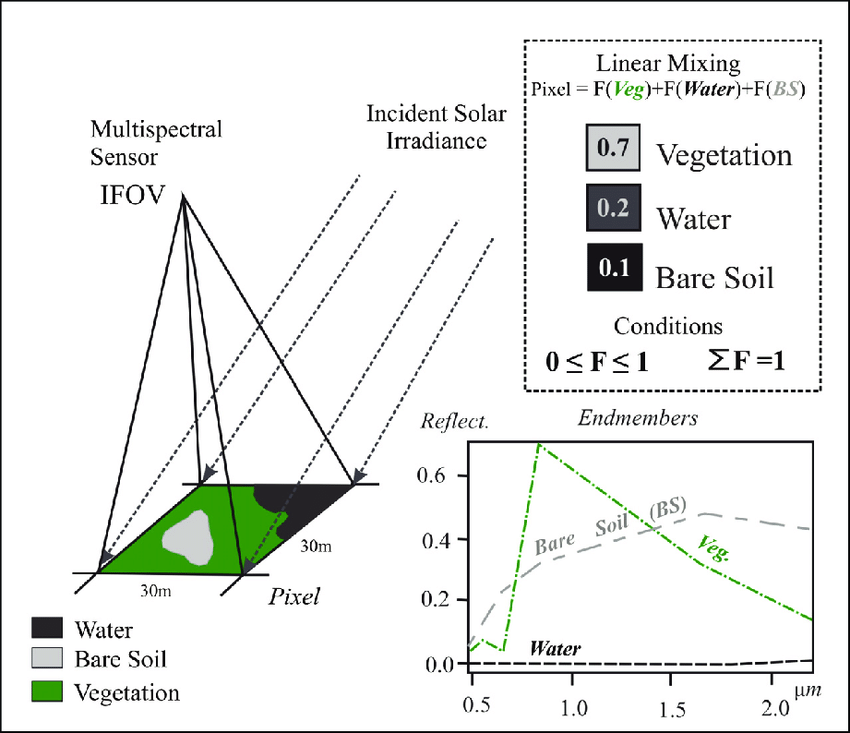
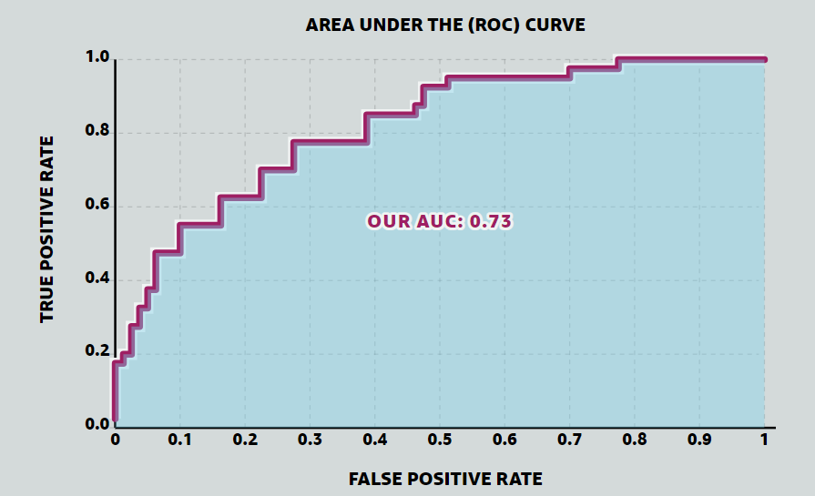
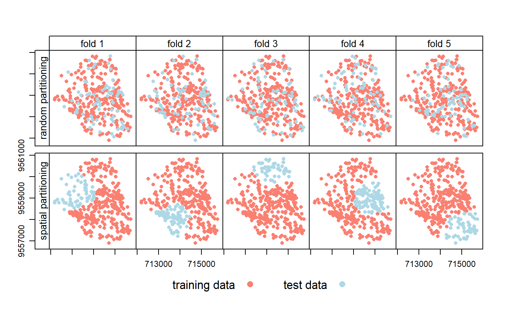
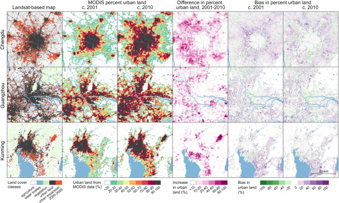
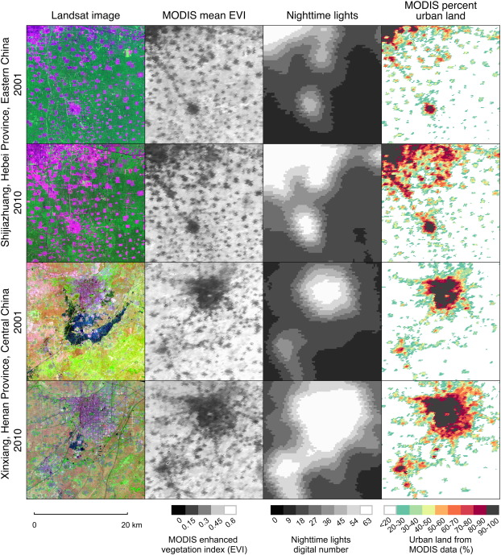

WEEK 7
Classification the big questions and accuracy
This is a learning diary of CASA0023 WEEK 7, the lecture presentation is here, and the practical material is here.
1 Summary: lecture
This week started with Object based image analysis (OBIA) and sub pixel analysis, and continued with accuracy assessment methods, mainly spatial cross validation.

1.1 Object based image analysis and sub pixel analysis
Object based image analysis (OBIA)

- Instead of considering cells we consider shapes based on the
similarity (homogeneity)ordifference (heterogeneity)of the cells =superpixels - SLIC (Simple Linear Iterative Clustering) Algorithm for Superpixel generation is the most common method
- Regular points on the image
- Work out spatial distance (from point to centre of pixel) = closeness to centre
- Colour difference (RGB vs RGB to centre point) = homogenity of colours
- Can only use
Euclidean distancein SLIC - Each iteration the centre moves- 4-10 is best (based on orignal paper)
- The values can change and the boarders move (like k-means?)
- Doesn’t consider connectivity = very small cells
- We can then take the average values per object and classify them using methods we’ve seen
Supercellspackage can use any distance measure (e.g. dissimilarity)
- Note that there are many OBIA classifiers, they all do similar, but slightly different processes, more advanced package would be
SegOptimthat can use algorithms from other software
Sub pixel analysis
Termed (all the same): Sub pixel classification, Spectral Mixture Analysis (SMA), Linear spectral unmixing
Characteristic

SMA determines the proportion or abundance of landcover per pixel. The assumption that reflectance measured at each pixel is represented by the linear sum of endmembers weighted by the associated endmember fraction. Typically we have a few endmembers that are spectrally pure.
Formula
Sum of end member reflectance * fraction contribution to best-fit mixed spectrum
\[ p_\lambda=\sum_{i=1}^{n} (p_{i\lambda} * f_i) + e_\lambda \]
- \(p_\lambda\) = The pixel reflectance
- \(p_i\lambda\) = reflectance of endmember \(i\)
- \(f_i\) = fractional cover of end member \(i\)
- \(n\) = number of endmembers
- \(e_\lambda\) = model error
Number of End members
Simplify the process and use the V-I-S model in urban areas: Vegetation-Impervious surface-Soil (V-I-S) fractions
Multiple endmember spectral analysis (MESMA)
Increase computation or use a spectral library
1.2 Accuracy assessment
After producing and output we need to assign an accuracy value to it (common to machine learning).

Remote sensing focus on
PAProducer accuracy (recall or true positive rate or sensitivity)UAUser’s accuracy (consumer’s accuracy or precision or positive predictive valueOAthe (overall) accuracy
Where model is correct
True positive= model predicts positive class correctlyTrue negative= model predicts negative class correctly
Where model is incorrect
False positive= model predicts positive, but it is negativeFalse negative= model predicts negative, but it is positive
Calculation
Producer’s accuracydefined as the fraction of correctly classified pixels (TP) compared to ground truth data (TP+FN)User’s accuracydefined as the fraction of correctly classified pixels (TP) relative to all others classified as a particular land cover(TP+FP)Overall accuracythat represents the combined fraction of correctly classified pixels (TP +TN) across all land cover types (TP+FP+FN+TN)Errors of omission(100-producer’s accuracy)Errors of commission(100- user’s accuracy)
Kappa coefficient
. \[ k=\frac{p_o - p_e}{1- p_e} \]
- \(p_o\) is the proportion of cases correctly classified (accuracy)
- \(p_e\) expected cases correctly classified by chance (further equations in Foody 2020)
Designed to express the accuracy of an image compared to the results by chance, ranges from 0 to 1.
“Sadly the calls to abandon the use of the kappa coefficient in accuracy assessment seem to have fallen on deaf ears. It may be that the kappa coefficient is still widely used because it has become ingrained in practice and there may be a sense of obligation to use it”
Beyond traditional remote sensing accuracy assessment
- Problem with recall (
Producer accuracy) vs Precision (User accuracy) - False positives (
Producer) or false negatives (User) more important?- model with high recall (Producer accuracy) = true positives but some false positives (predicted urban but land cover that isn’t urban)
- Model with high precision (User’s accuracy) = actual urban but predicted other landcover We can’t have both a high high producer accuracy (recall) and a high user’s accuracy (precision)
- User’s accuracy (precision)
- I have gone to a site, the model predicted it to be urban, it is not urban…
- How well can the user use the data / classification
- Producer’s accuracy (recall)
- I have gone all the urban sites, they were urban. BUT I can see in the distance a site that was predicted to be GRASS but is actually URBAN
- How well did the producer make the data/ classification
F1 score
The F1-Score (or F Measure) combines both recall (Producer accuracy) and Precision (User accuracy):
\[ F1 = \frac{TP}{TP + \frac{1}{2}*(FP+FN)} \]
Value from 0 to 1, where 1 is better performance
- Issues
- No True Negatives (TN) in the equation
- Negative categories that are correctly classified as negative
- Are precision and recall equally important ?
- Precision (producer): how many positive points are correct
- Recall (user): how precise the model is at positive predictions
- What if our data is very unbalanced ? - More negatives than positives?
Receiver Operating Characteristic Curve (the ROC Curve)
- Changing the threshold value of classifier will change the True Positive rate
- Maximise true positives (1) and minimise false positives (0)
- Vertical columns here - uses whole matrix
- First is True positive: true positive rate = TP/TP+FN
- Second is False positive rate: false positive rate = FP/FP+TN
Area Under the ROC Curve (AUC, or AUROC)

- Simply the area under the curve
- Compare models easily (no need to look at the ROC curve)
- Perfect value will be 1, random will be 0.5
“The AUC is the probability that the model will rank a randomly chosen positive example more highly than a randomly chosen negative example.”
How do we get test data for the accuracy assessment?
- Sometimes -
remote sensing approach - Good approach -
train and test split - Best approach -
cross validation
Spatial cross validation

- Spatially partition the folded data, folds are from cross validation
Disjoint(no common boundary) using k -means clustering (number of points and a distance)- Same as cross validation but with clustering to the folds
- Stops our training data and testing data being near each other > In other words this makes sure all the points (or pixels) we train the model with a far away from the points (or pixels) we test the model with
Use a Support Vector Machine classifier that requires hyperparameters (set before the classification).Source: Lovelace et al. (2022)
- Standard SVM then the classifier will try to
overfit= perfect for the current data but useless for anything else - Cortes and Vapnik -
soft margin, permit misclassifications = controlled with CC= adds penalty (proportional to distance from decision line) for each classified point. Small = image on right, large = image on left. changes the slopeGamma (or also called Sigma)= controls the influence of a training point within the classified dataPerformance leveleach spatial fold (taken from our first k-means cross validation fold division). = Top row below, a typical cross validation foldTuning leveleach fold (outer) is then divided into 5 again (inner fold).= Bottom row belowPerformance estimationUse the 50 randomly selected hyperparameters in each of these inner subfolds, i.e., fit 250 models with random C and Gamma use the best values to outer fold, based onAUROCwith testing data
2 Summary: practical
This week’s practical will consist mainly of the following:
- Objectbased image analysis (OBIA) using GEE
- Spectral unfixing with GEE
This week’s practical focused on deepening the content of the lecture and carrying out practical exercises. I followed the instructions and choosed Dar es Salaam as my research area, did spectral unfixing and object based image analysis (OBIA) using GEE. The content is relatively complex and requires further practice or application to fully understand the content of this section.

3 Application
This week’s study included many interesting topics such as object based image analysis (OBIA), sub pixel analysis, and spatial cross validation. In particular, sub pixel analysis significantly expanding the application scenarios and accuracy of remote sensing image analysis.
3.1 Applications of sub pixel analysis
Sub pixel analysis has a wide range of application scenarios in the field of remote sensing, mainly including the following:
Image resolution enhancement: Sub pixel analysis can be used to improve the spatial resolution of remote sensing images. Traditional remote sensing images are often limited by the size of image elements, resulting in insufficient ability to describe the details of the features. Sub-pixel analysis techniques can extract more feature detail from the information within the image element, thereby increasing the resolution of the image and helping to identify and measure surface features more accurately.
Target detection and classification: Sub pixel analysis plays an important role in the detection and classification of targets in remotely sensed images. For example, features such as buildings, vegetation and water bodies in remotely sensed images may be mixed within an image element, making it difficult for traditional element-based classification methods to accurately distinguish these features. Sub-pixel analysis can extract detailed information within these mixed pixels to improve the accuracy of target detection and classification.
Environmental monitoring: Sub pixel analysis also has important applications in environmental monitoring. For example, by analysing sub-pixel information in satellite remote sensing images, environmental parameters such as vegetation cover and water body area can be estimated more accurately, providing an important basis for environmental protection and planning.
Radiative transfer models: Sub-pixel analysis techniques can also be used in the study of radiative transfer models. Radiative transfer models are the basis of remote sensing inversions and are used to describe the radiative transfer processes between the Earth’s surface and the atmosphere. Sub-pixel techniques can help researchers to model this process more accurately and improve the accuracy of remote sensing inversions.
There are also extensive applications in the field of urban planning.
Building and road extraction: Sub pixel analysis techniques can be used to extract building and road information from urban remote sensing images more accurately. This is important for the planning, construction and maintenance of urban infrastructure. By increasing image resolution, sub-pixel analysis helps to identify and measure detailed features in the city, such as building outlines, road widths, etc.
Green space and water monitoring: Sub pixel analysis can be applied to urban green space and water monitoring. By analysing the detailed information in the mixed image elements, sub-pixel analysis can provide more accurate estimates of environmental parameters such as green space coverage and water body areas, providing a basis for urban greening and water resource management.
Urban sprawl and land use change monitoring: Sub pixel analysis can help urban planners monitor urban sprawl and land use change. This technique can improve the accuracy of change detection and help to analyse urban development trends and develop sound urban planning strategies.
Heat island effect research: Sub pixel analysis techniques can be applied to the study of urban heat island effect. By improving the resolution and accuracy of remotely sensed images, sub-pixel analysis can provide a more accurate description of urban surface temperature distribution, help to identify the causes and extent of the urban heat island phenomenon, and provide support to urban planners in formulating measures to reduce the heat island effect.
Population density estimation: Sub pixel analysis techniques can be used to more accurately estimate urban population density. By analysing detailed information about buildings and residential areas in remotely sensed images, sub-pixel analysis can provide more accurate data to support urban population distribution and planning.
3.2 Application case
Mapping sub-pixel urban expansion in China using MODIS and DMSP/OLS nighttime lights , Sourse: Huang, Schneider, and Friedl (2016)
Urbanization accelerated rapidly in China during the first decade of the 21st century, largely at the expense of agricultural lands. To improve available regional information related to the coupled dynamics between these two land use types, this paper fused data from the Moderate Resolution Imaging Spectroradiometer (MODIS) and stable nighttime lights observations from DMSP/OLS instruments to map fractional urban cover at 250m spatial resolution for cities in Eastern, Central, and Southern China where recent urban expansion has been rapid and pronounced.

To accomplish this, this paper constructed Random Forest regression models to estimate sub-pixel urban percentage for 2001 and 2010 using high quality calibration information derived from Landsat data. Separate models were built for temperate and tropical regions and then evaluated for nine cities between 18,000 and 31,000km2 in area. Urban area estimated from MODIS compared favorably with Landsat-based results, with mean absolute errors of ~9-15%. Tests of different input feature sets showed that including data from downscaled MODIS 500m bands and nighttime lights can improve estimates of urban land area compared to using MODIS 250m features alone. Based on these results this paper produced wall-to-wall maps of urban land use in 2001 and 2010 for four MODIS tiles covering temperate and subtropical China, thereby demonstrating the utility of coarse spatial resolution data for mapping urban land use and loss of agricultural land at regional and larger scales.

3.3 Case comments
Advantages or contribution
- Improved access to spatial resolution and regional information on rapid urban expansion in eastern, central and southern China using a combination of MODIS and DMSP/OLS nighttime lighting data.
- Estimated sub pixel urban coverage percentages for 2001 and 2010 using a random forest regression model and obtained high quality calibration information using Landsat data.
- Separate models were constructed for different climatic regions (temperate and tropical), assessing nine cities within a range of 18,000-31,000 km2 .
- Compared to Landsat-based results, the urban areas estimated using MODIS have a high accuracy, with an average absolute error of about 9-15%.
- Different sets of input features were tested and the results show that incorporating downscaled MODIS 500m band and nighttime light data into the model improves the accuracy of urban land area estimates, outperforming the use of MODIS 250m features only.
Disadvantages or potential
- The article focuses on the impact of urban expansion on agricultural land, but does not discuss in depth the changes in other land types (e.g. forests, wetlands, etc.) during urban expansion, possibly overlooking the impact of urbanisation on other ecosystems.
- The article uses MODIS and DMSP/OLS nighttime lighting data for the analysis, but there may be limitations in the spatial and temporal resolution and sensor performance of these two data sources that affect the accurate identification of urban expansion and land use change.
- This study only analyses urban land use for the years 2001 and 2010 without dynamic change analysis, thus making it difficult to capture the stage characteristics and trends in the urban expansion process.
- The article relies mainly on remote sensing data for urban expansion analysis and lacks the support of field surveys and socio-economic data, which may lead to the analysis results deviating from the actual situation.
4 Reflection
This week has been interesting and challenging, with new knowledge added to improve the accuracy of remote sensing image analysis and broaden the application scenarios. Based on what I have learnt this week, I am not only able to carry out more in-depth analysis, but also able to assess the accuracy of the analysis.
In my practical work in detailed urban planning and design, the spatial resolution of many remote sensing data is too large (around 30m is common), but what this week learnt has reduced this limitation. However, it will still take some practice and application for me to master the content of this week.